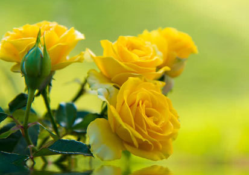

MY Second Amazing Articles
DIVYA TULASI VAIBHAVFlowers are the most beautiful flower God has created. They are of different shapes, colours, and different sizes. My favourite flowers are Rose and are known as the flower of love. The rose is found all over the world. Rose is a very beautiful flower. Some call it the ‘King of Flower’ and some call it as the ‘Queen of Flowers.’ Roses grow in different colours like red, white, yellow, pink and many more. Roses have small thorns on their stem to protect themselves. The rose plant grows in the form of shrubs. A rose plant has round and deep coloured leaves. The unique fruit of the rose plant is called rosehip. The petals of the rose are dried and packed so to use them for scent.
Blossom
Flowers are the most beautiful flower God has created. They are of different shapes, colours, and different sizes. My favourite flowers are Rose and are known as the flower of love. The rose is found all over the world. Rose is a very beautiful flower. Some call it the ‘King of Flower’ and some call it as the ‘Queen of Flowers.’ Roses grow in different colours like red, white, yellow, pink and many more. Roses have small thorns on their stem to protect themselves. The rose plant grows in the form of shrubs. A rose plant has round and deep coloured leaves. The unique fruit of the rose plant is called rosehip. The petals of the rose are dried and packed so to use them for scent..
Flowers are the most beautiful flower God has created. They are of different shapes, colours, and different sizes. My favourite flowers are Rose and are known as the flower of love. The rose is found all over the world. Rose is a very beautiful flower. Some call it the ‘King of Flower’ and some call it as the ‘Queen of Flowers.’ Roses grow in different colours like red, white, yellow, pink and many more. Roses have small thorns on their stem to protect themselves. The rose plant grows in the form of shrubs. A rose plant has round and deep coloured leaves. The unique fruit of the rose plant is called rosehip. The petals of the rose are dried and packed so to use them for scent.
Flowers are the most beautiful flower God has created. They are of different shapes, colours, and different sizes. My favourite flowers are Rose and are known as the flower of love. The rose is found all over the world. Rose is a very beautiful flower. Some call it the ‘King of Flower’ and some call it as the ‘Queen of Flowers.’ Roses grow in different colours like red, white, yellow, pink and many more. Roses have small thorns on their stem to protect themselves. The rose plant grows in the form of shrubs. A rose plant has round and deep coloured leaves. The unique fruit of the rose plant is called rosehip. The petals of the rose are dried and packed so to use them for scent..
Flowers are the most beautiful flower God has created. They are of different shapes, colours, and different sizes. My favourite flowers are Rose and are known as the flower of love. The rose is found all over the world. Rose is a very beautiful flower. Some call it the ‘King of Flower’ and some call it as the ‘Queen of Flowers.’ Roses grow in different colours like red, white, yellow, pink and many more. Roses have small thorns on their stem to protect themselves. The rose plant grows in the form of shrubs. A rose plant has round and deep coloured leaves. The unique fruit of the rose plant is called rosehip. The petals of the rose are dried and packed so to use them for scent..
Flowers are the most beautiful flower God has created. They are of different shapes, colours, and different sizes. My favourite flowers are Rose and are known as the flower of love. The rose is found all over the world. Rose is a very beautiful flower. Some call it the ‘King of Flower’ and some call it as the ‘Queen of Flowers.’ Roses grow in different colours like red, white, yellow, pink and many more. Roses have small thorns on their stem to protect themselves. The rose plant grows in the form of shrubs. A rose plant has round and deep coloured leaves. The unique fruit of the rose plant is called rosehip. The petals of the rose are dried and packed so to use them for scent..